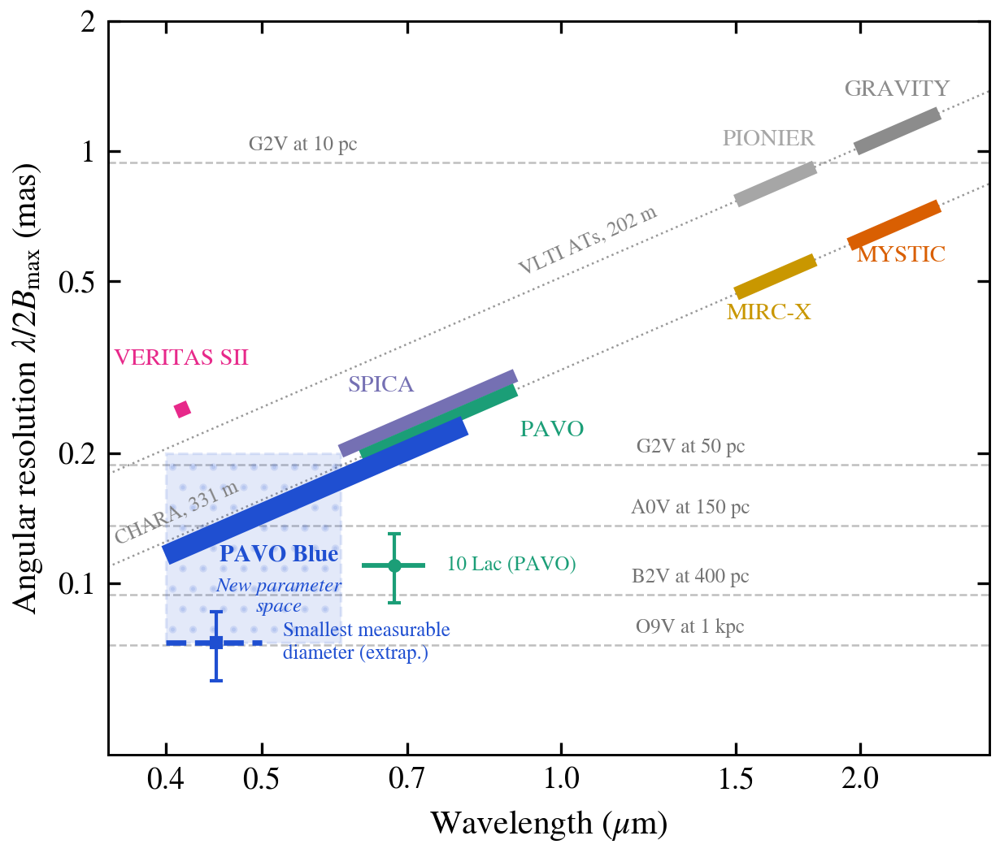
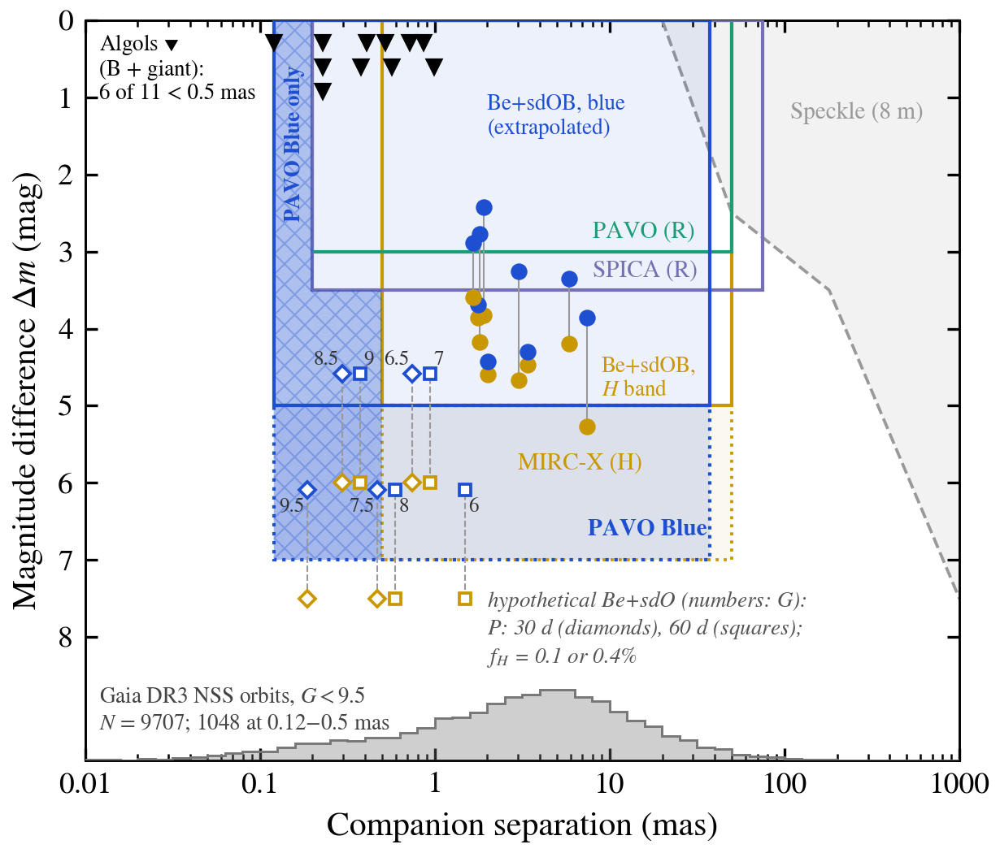
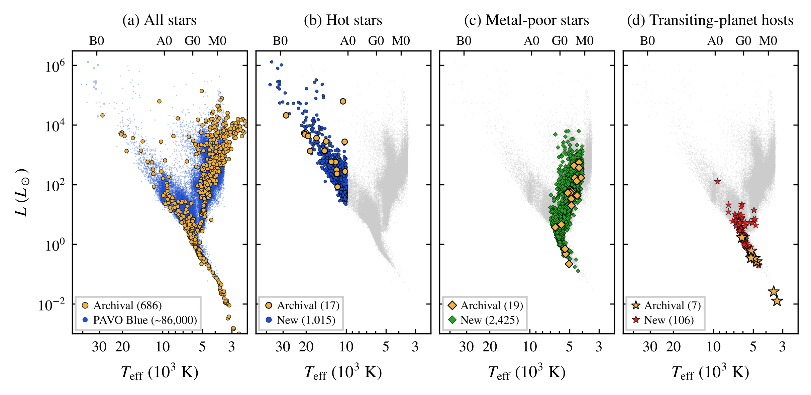
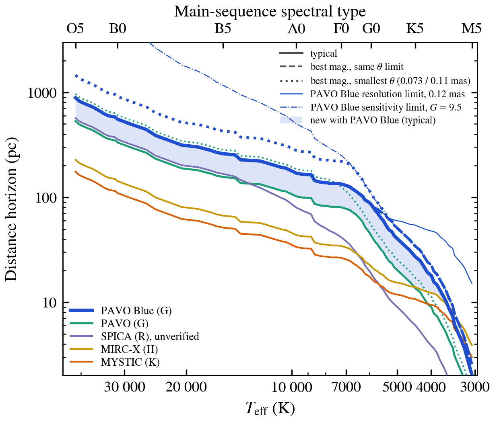
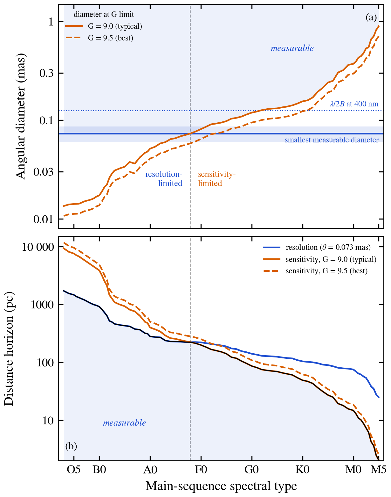
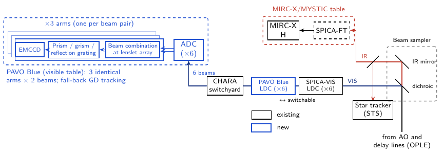
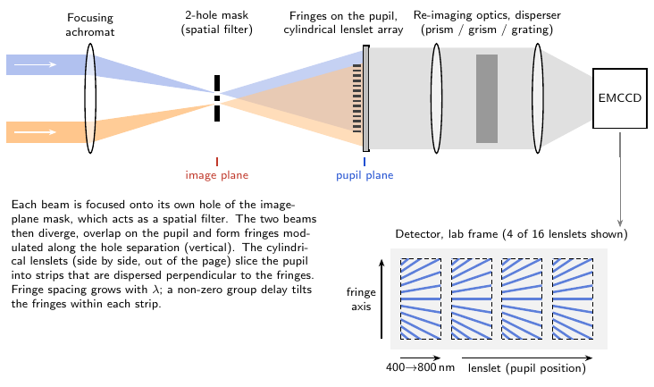
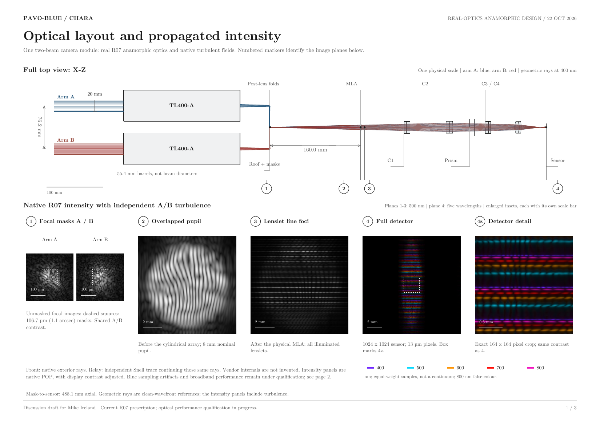

About
I am an astrophysicist working on massive binary stars and optical long-baseline interferometry. I am currently a Research Fellow at the European Southern Observatory (ESO), stationed for the 4th year of my Fellowship at the CHARA Array on Mount Wilson, California, and affiliated with Nice Observatory for support of the SPICA instrument. From 15 November 2026 I will join Georgia State University as a Postdoctoral Researcher.
During the first three years of the Fellowship (2022–2025) I split my time between independent research and observatory duties at Paranal, serving as MATISSE and then GRAVITY Instrument Fellow at the VLTI. Before joining ESO, I was a Postdoctoral Research Associate at CHARA / Georgia State University (2017–2022). I earned my Ph.D. in Astrophysics from Charles University in Prague in 2017, jointly with ESO Santiago.
I am currently leading the development of PAVO Blue, a new visible-light beam combiner for the CHARA Array that will open interferometry down to 400 nm.
Featured project · PAVO Blue
I am leading, as Principal Investigator, a funding proposal to the NSF Advanced Technologies and Instrumentation (ATI) program to build PAVO Blue at the CHARA Array. It is a new beam combiner based on the proven PAVO design, built around state-of-the-art EMCCD cameras. No long-baseline interferometric beam combiner in the world currently operates shortward of 600 nm. Combined with CHARA’s 331 m baselines, PAVO Blue will deliver the finest angular resolution of any optical interferometer.
Team: R. Klement (PI), J. D. Monnier (U. Michigan), N. Anugu and D. R. Gies (CHARA / Georgia State University).
Four main goals
A new parameter space
PAVO Blue will address science gaps that are accessible only with CHARA: fundamental stellar parameters (radii, effective temperatures, limb and gravity darkening) for TESS and PLATO targets, and hidden companions and dynamical masses for the binaries that the final Gaia data releases will reveal. Blue wavelengths are especially suited to hot, massive stars and to stripped-star companions, which are much brighter relative to their companions in the blue than in the near-infrared.





Instrument concept
PAVO Blue keeps the original PAVO’s multi-mode spatial filtering with a cylindrical lenslet array. That approach makes it robust to the partial adaptive-optics correction available in the visible. Each of the three identical arms combines two beams, with its own mask, lenslet array, prism/grism spectrograph and Nuvu HNü EMCCD detector (three times lower clock-induced charge than the legacy camera). Fringe tracking is done in the near-IR by MIRC-X/SPICA-FT, while new atmospheric and longitudinal dispersion compensators condition the broad visible band.



A real-optics anamorphic design of one two-beam camera module built from off-the-shelf components: TL400 focusing lenses, an Edmund cylindrical microlens array, crossed cylindrical doublets (4:1 anamorphism), an 18° N-BK7 prism, and a 1024×1024 EMCCD. Physical-optics propagation through independent turbulent wavefronts traces the light from the focal masks to the detector at 400–800 nm.
View design PDF (3 pages)Plan
- Year 1 — Final design and procurement; data reduction pipeline, observing tools, and calibrator selection.
- Year 2 — Lab integration and first light with one arm.
- Year 3 — All three arms, commissioning, science verification, and release to the community through NOIRLab open access.
Research
My research centers on the role of binarity in the evolution of massive stars, with a particular focus on classical Be stars and their hot, stripped subdwarf companions. I combine optical/infrared interferometry, high-resolution spectroscopy, radio observations, Gaia astrometry, and photometry to characterize these systems and their circumstellar disks.
- Be + sdOB binary star systems: detections, orbits, and dynamical masses
- Circumstellar disk modeling, including the tidal and radiative influence of stripped companions
- Binarity surveys of hot stars with interferometry, spectroscopy, Gaia astrometry, and radio interferometry
- Optical long-baseline interferometry (VLTI/GRAVITY, PIONIER; CHARA/MIRC-X, MYSTIC, PAVO, VEGA, SPICA)
- Beam combiner instrumentation: cameras, design, and science cases (PAVO Blue)
- Machine learning and AI tools applied to astronomical research
Telescope time & observing experience
Curriculum Vitae
Summary below · full CV (PDF)
Positions
- Year 4: 100% independent research, stationed at the CHARA Array; affiliated with Nice Observatory for SPICA support
- Years 1–3: 50% observatory duties at VLT Paranal (MATISSE, then GRAVITY Instrument Fellow)
Education
Publications
From NASA/ADS, November 2026. Also on NASA ADS and ORCID.
- Empirical H- and K-band Limb Darkening for 31 CHARA Stars: A Near-infrared Benchmark for Stellar-Atmosphere Models
- Detection and Astrometry of the Ba–Bb Subsystem in α Piscium: First Dual-field Interferometry at the CHARA Array
- δ Circini: A massive hierarchical triple system with an eclipsing binary
- Classical Be stars
- Binary Stars Take What They Get: Evidence for Efficient Mass Transfer from Stripped Stars with Rapidly Rotating Companions
- Orbital and Physical Properties of the Pleiades Binary 27 Tau (Atlas)
- Discovery of the binary nature of the magnetospheric B-type star ρ Oph A
- Precise Age for the Binary HD 21278 in the Young α Persei Cluster
- Newborn Be star systems observed shortly after mass transfer
- Bayesian sampling with BeAtlas, a grid of synthetic Be star spectra I. Recovering the fundamental parameters of α Eri and β CMi
- Precise Age for the Binary Star System 12 Com in the Coma Berenices Cluster
- Three-dimensional Orbit of AC Her Determined: Binary-induced Truncation Cannot Explain the Large Cavity in This Post-AGB Transition Disk
- Gamma Cas Stars as Be+White Dwarf Binary Systems
- The Orbits and Dynamical Masses of the Castor System
- The binary system of the spinning-top Be star Achernar
- A detailed analysis of the Gl 486 planetary system
- The Interferometric Binary ε Cnc in Praesepe: Precise Masses and Age
- HR 6819 is a binary system with no black hole. Revisiting the source with infrared interferometry and optical integral field spectroscopy
- The Transformative Journey of HD 93521
- ARMADA. I. Triple Companions Detected in B-type Binaries α Del and ν Gem
- A naked-eye triple system with a nonaccreting black hole in the inner binary
- A Spectroscopic Orbit for the Late-type Be Star β CMi
- Investigating the Circumstellar Disk of the Be Shell Star 48 Librae
Talks & Presentations
Invited Review Talks
Two further invitations (EAS 2023; Hot Stars 2024: Life with Circumstellar Matter) declined due to scheduling.
Teaching & Mentoring
Lectures & Tutorials
Mentoring
Community Service
Contact
- Email: robertklement@gmail.com
- ORCID: 0000-0002-4313-0169
- GitHub: robert-klement
-
Currently stationed at the CHARA Array, Mount Wilson, CA.
From 15 November 2026: Georgia State University.